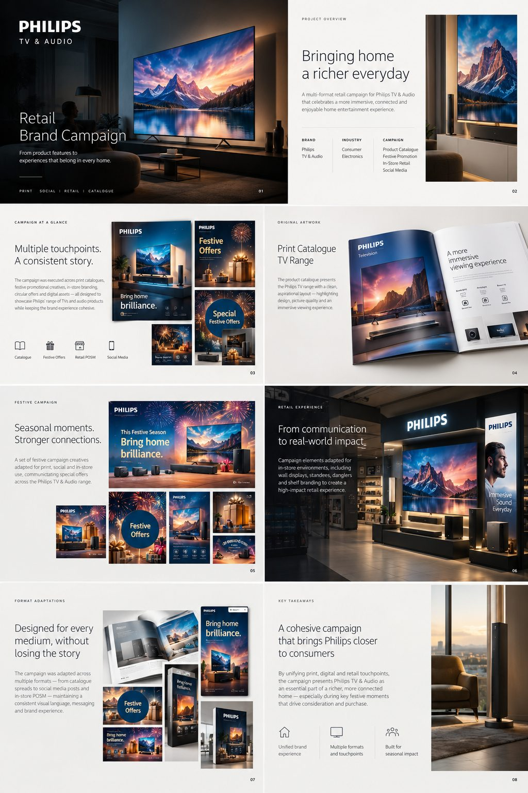
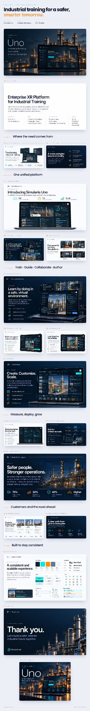

Opening signal
I turn complex ideas into visual systems people can move through.
Presentation, information and experience design for stories that need structure before they need more noise.
Four real projects / one continuous signal

The line is the invitation. The material does the explaining.
Project stage
One practice.
Four temperatures.
The surface changes with the story: campaign language, editorial rhythm, public-health clarity, or a system built to be used.
Use the index or arrow keys to change the stage.
Philips TV & Audio
A campaign sequence that carries Philips TV & Audio from room-scale images into print, social, retail and catalogue formats.
Actual project asset / state shown: supplied source frame
Trace the methodVisual walkthrough
A project is a sequence of decisions.
I work from the inside out: find the signal, give it a structure, then make the structure carry its own weight.
-
01
Source frame / synthesis Distill
Separate the signal from the material around it.
-
02
Source frame / information Structure
Build a visual order people can enter without instructions.
-
03

Source frame / delivery Deliver
Make the system repeatable across the places the story must land.
Closing signal
Give an idea somewhere to hold.
If the story is complex, the structure can still feel clear. Start with the public profile and ask for the next step.
Contact details are shared privately on request. This public prototype does not publish a personal email.